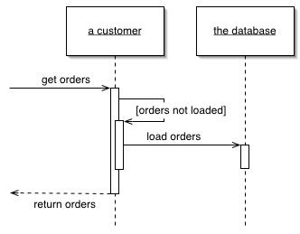

Lazy Load (Ленивая загрузка)

Паттерн проектирования Lazy Load
Описание Lazy Load
Объект, не содержит данных, но знает, где их взять.
Для загрузки данных из БД в память приложения удобно пользоваться загрузкой не только данных об объекте, но и о сопряжённых с ним объектах. Это делает загрузку данных проще для разработчика: он просто использует объект, который, тем не менее вынужден загружать все данные в явном виде.
Но это ведёт к случаям, когда будет загружаться огромное количество сопряжённых объектов, что плохо скажется на производительности в случаях, когда эти данные реально не нужны.
Паттерн Lazy Load (Ленивая Загрузка) подразумевает отказ от загрузки дополнительных данных, когда в этом нет необходимости. Вместо этого ставится маркер о том, что данные не загружены и их надо загрузить в случае, если они понадобятся. Как известно, если Вы ленивы, то вы выигрываете в том случае, если дело, которое вы не делали на самом деле и не надо было делать.
Существует четыре основных варианта ленивой загрузки.
- Lazy Initialization (Ленивая Инициализация) использует специальный макер (обычно null), чтобы пометить поле, как не загруженное. При каждом обращении к полю проверяется значение маркера и, если значение поля не загружено - оно загружается.
- Virtual Proxy (Виртуальный Прокси) - объект с таким же интерфейсом, как и настоящий объект. При первом обращении к методу объекта, виртуальный прокси загружает настоящий объект и перенаправляет выполнение.
- Value Holder (Контейнер значения) - объект с методом getValue. Клиент вызывает метод getValue, чтобы получить реальный объект. getValue вызывает загрузку.
- Ghost (Призрак) - объект без каких-либо данных. При первом обращении к его методу, призрак загружает все данные сразу.
Использована иллюстрация с сайта Мартина Фаулера.